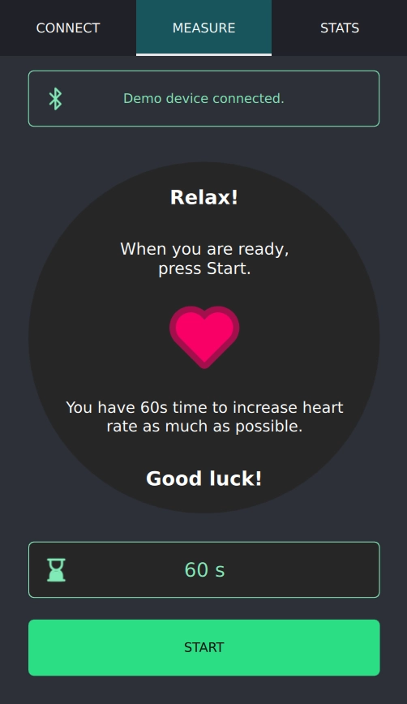
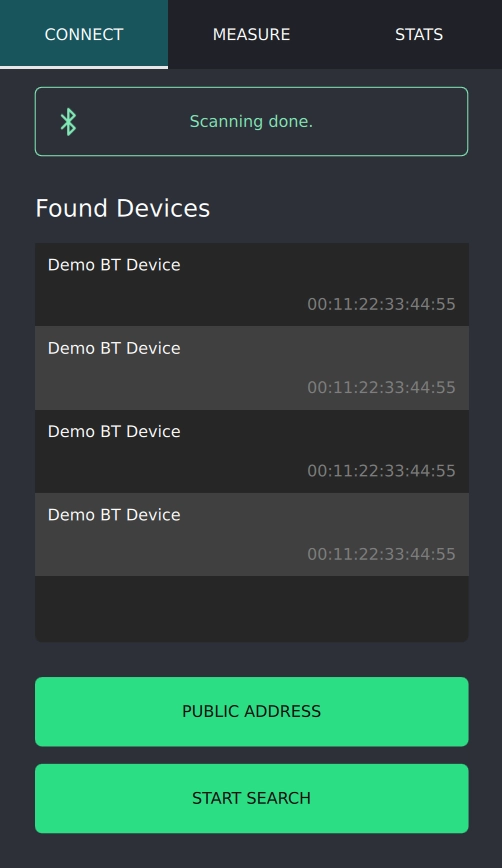
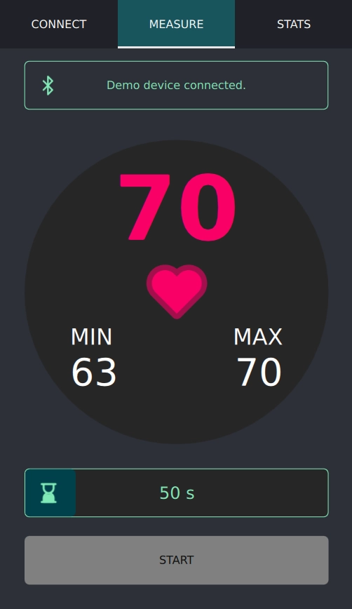
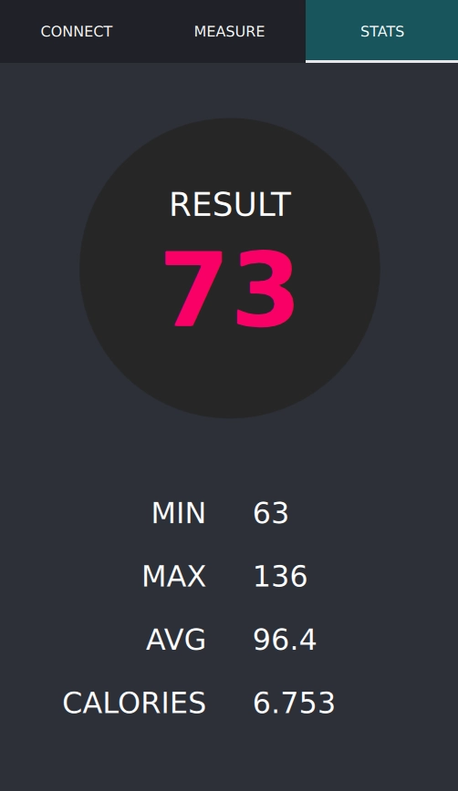

Bluetooth Low Energy Heart Rate Game
A game demonstrating the interaction with a Bluetooth Low Energy Heart Rate device/service.
The Bluetooth Low Energy Heart Rate Game shows how to develop a Bluetooth Low Energy application using the Qt Bluetooth API. The application covers the scanning for Bluetooth Low Energy devices, connecting to a Heart Rate service on the device, writing characteristics and descriptors, and receiving updates from the device once the heart rate has changed.

The example introduces the following Qt classes:
A Bluetooth Low Energy device with a Heart Rate service is required for this application to work. An alternative might be a programmable Bluetooth Low Energy device which might simulate the service. You can also use the Heart Rate server example for that purpose. If no such device is available, a demo mode is available which creates and displays random values. This demo mode is enabled by passing --simulator on the command line.
The goal of the game is to increase the measured heart rate as much as possible.
A detailed explanation of the APIs used in this example is given in the Using Qt Bluetooth Low Energy API section of the Qt Bluetooth module documentation.
The Bluetooth Low Energy Scanner example might be more suitable if a heart rate device is not available. The scanner example works with any type of Bluetooth Low Energy peripheral device.
Running the Example
To run the example from Qt Creator, open the Welcome mode and select the example from Examples. For more information, visit Building and Running an Example.
Checking Bluetooth Permissions
Before the application can start using Bluetooth, we have to check that appropriate permissions were granted:
QBluetoothPermission permission{}; permission.setCommunicationModes(QBluetoothPermission::Access); switch (qApp->checkPermission(permission)) { case Qt::PermissionStatus::Undetermined: qApp->requestPermission(permission, this, &DeviceFinder::startSearch); return; case Qt::PermissionStatus::Denied: setError(tr("Bluetooth permissions not granted!")); setIcon(IconError); return; case Qt::PermissionStatus::Granted: break; // proceed to search }
Visual Tour
The application searches for all Bluetooth Low Energy peripheral devices in the vicinity. It is assumed that the remote devices advertise their presence. The found devices are presented in a list. Note that all found Bluetooth Low Energy devices are listed even if they do not offer a Heart Rate service.

After the user has selected a target device, the example connects to its Heart Rate service if one is available. It automatically enables notification updates for the Heart Rate value and presents the current value on the screen.

Once the monitoring process is finished, a small summary of the received values is presented.
